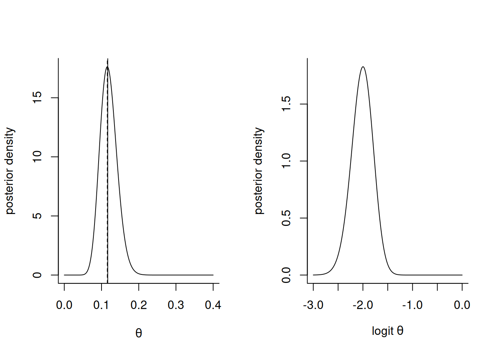
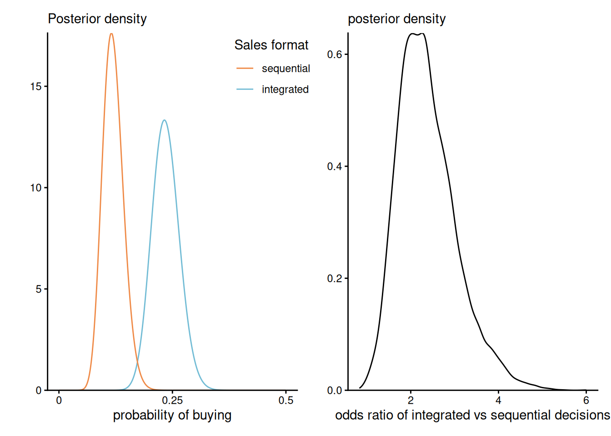
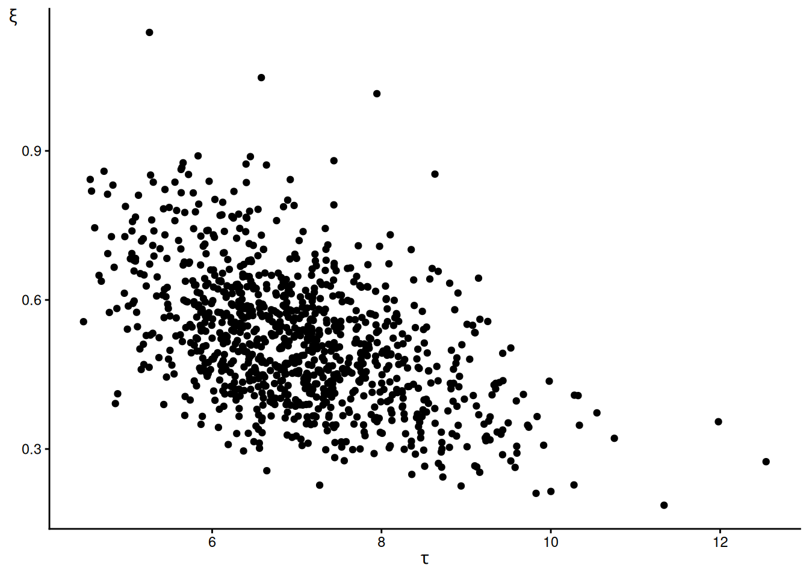
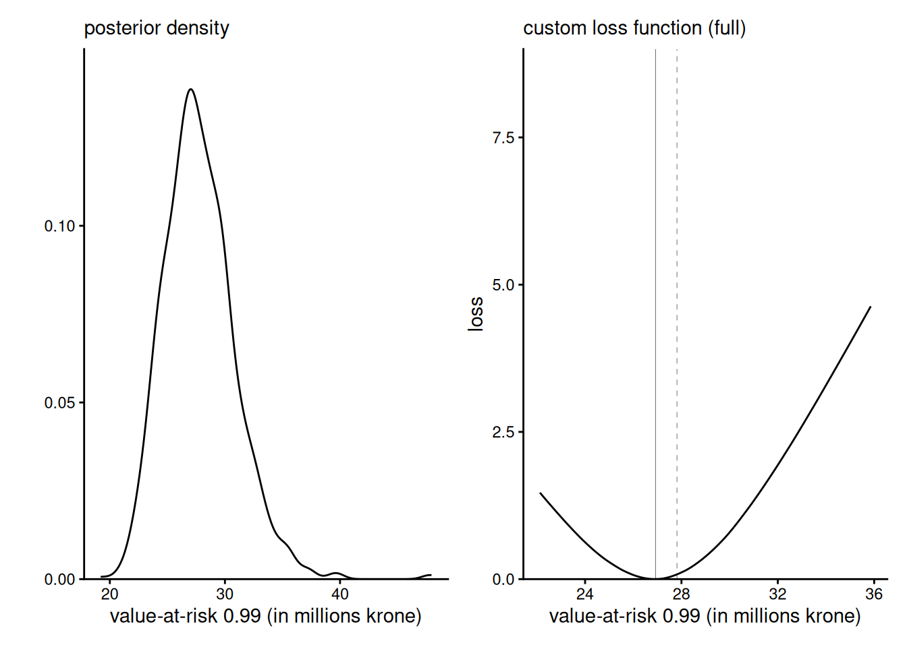

# Load data set
data("sellingformat", package = "hecbayes")
# Create contingency table
cont <- with(sellingformat, table(purchased, format))Lecture 2
The importance of selling format
Duke & Amir (2023) consider the difference between integrated and sequential format for sales. The sellingformat dataset contains \(n=397\) observations split into two groups: quantity-integrated decision (decide the amount to buy) and quantity-sequential (first select buy, then select the amount). Participants of the study were randomly allocated to either of these two format and their decision, either buy, 1, or do not buy 0, is recorded.
format) and response (purchased).
| purchased | format | freq |
|---|---|---|
| 0 | quantity-integrated | 152 |
| 1 | quantity-integrated | 46 |
| 0 | quantity-sequential | 176 |
| 1 | quantity-sequential | 23 |
Bayes factor and model comparison
We consider the number of purchased out of the total, treating records as independent Bernoulli observations with a flat (uniform prior). We also consider a simple model comparison where the null hypothesis is that the selling format has no impact on the decision to buy or not (no treatment effect). We write \(y=\sum_{i=1}^n y_i\) and \(y_1 = \sum_{i=1}^n x_iy_i,\) \(n_1 = \sum_{i=1}^n x_i\) and \(y_0+y_1=y\), \(n_0+n_1=n.\) The subscript indicates the groups \(0\) (quantity-integrated) and \(1\) (quantity-sequential)$.
With a uniform prior, the unnormalized posterior for the null model is \[\mathcal{L}_0(\theta) = \theta^y(1-\theta)^{n-y}\] and that of the alternative model is \[\mathcal{L}_0(\theta_0, \theta_1) = \theta_0^{y_0}(1-\theta_0)^{n_0-y_0}\theta_1^{y_1}(1-\theta_1)^{n_1-y_1},\] the marginal likelihood is \(\mathrm{beta}(y+1, n-y+1).\) From these, we can compute directly the Bayes factor
# Calculation of the marginal likelihood
log_marg_post_bern <- function(n, y) {
lbeta(1 + y, 1 + n - y)
}
# Extract summary statistics (sufficient statistics)
n <- sum(cont)
n0 <- colSums(cont)['quantity-integrated']
n1 <- colSums(cont)['quantity-sequential']
y0 <- cont["1", "quantity-integrated"]
y1 <- cont["1", "quantity-sequential"]
y <- y0 + y1
# Alternative model (one proportion for each subgroup)
BF1 <- log_marg_post_bern(n = n0, y = y0) + # integrated
log_marg_post_bern(n = n1, y = y1) # sequential decision
# Null model (same proportion regardless of experimental variable)
BF0 <- log_marg_post_bern(n = n, y = y) # pooled
# Bayes factor
exp(BF0 - BF1)[1] 0.09345664# Normalizing constant is marginal likelihood
# whose log is about -110
# so too small for accurate numerical integration
# Integrate instead a binomial likelihood
# and remove this from the normalizing constant later
marg_binom <- integrate(
f = function(x) {
dbinom(x = y0, size = n0, prob = x)
},
lower = 0,
upper = 1
)
# Compare the numerical approximation with the true
c(
"numerical" = log(marg_binom$value) - lchoose(n0, y0),
"exact" = log_marg_post_bern(n = n0, y = y0)
)numerical.quantity-integrated exact
-109.9198 -109.9198 Maximum a posteriori
With a beta-binomial model, the posterior for the probability of buying is \(\mathsf{beta}(47, 153)\) for quantity-integrated and \(\mathsf{beta}(24, 177)\) for quantity-sequential.
We can proceed (analogous to the frequentist setting) to maximimization of the unnormalized log posterior to find the mode of the latter. This is unnecessary in this example (since the likelihood and the prior factorize) and we know the posterior distribution analytically; the mode for \(\mathsf{beta}(\alpha_1, \alpha_2)\) is \((\alpha_1-1)/(\alpha_1 + \alpha_2 -2).\)
It may be useful in more complex models to consider a change of variable so that our random variables live on the real line directly. This implies a change of variable, say here from \(\theta \in [0,1]\) to \(\vartheta \in \mathbb{R}\) via \(\vartheta =g(\theta)\log(\theta)-\log(1-\theta),\) the quantile function of the logistic distribution. The Jacobian of the transformation is \(\theta(1-\theta)\) and this yields an ajusted posterior (after modifying the prior) \[p(\vartheta \mid y) = p(y \mid \theta)\theta(1-\theta).\]
Note that, as a result, the mode is not invariant to reparametrization (so the MAP under the transformed model is not \(\widehat{\vartheta}_{\mathrm{map}} \neq g(\widehat{\theta}_{\mathrm{map}})\).
# Unnormalized log-posterior
logpost <- function(theta, y, n){
y * log(theta) + (n - y) * log(1 - theta) # prior is uniform
}
# Maximum a posteriori
map <- optimize(
f = logpost,
maximum = TRUE,
interval = c(0, 1),
y = y1,
n = n1)
par(mfrow = c(1,2), bty = "l")
# Plot the posterior density
curve(expr = dbeta(x, shape1 = 24, shape2 = 177),
from = 0,
to = 0.4,
n = 1001L,
ylab = "posterior density",
xlab = expression(theta))
abline(v = 23/197)
abline(v = map$maximum, lty = 2)
# Plot the posterior on the unconstrained space
curve(expr = dbeta(plogis(x), shape1 = 24, shape2 = 177) * plogis(x) * (1-plogis(x)),
from = -3,
to = 0,
n = 1001L,
ylab = "posterior density",
xlab = expression("logit"~theta))
# Mode is not invariant (due to Jacobian adjustment)
plogis(map$maximum)[1] 0.5288639
Posterior summary
We consider in this section a simple functional of the posterior parameters \(\theta_0\) and \(\theta_1,\) the odds ratio. We can compute the latter from \[O = \frac{\Pr(Y=1 \mid \texttt{integrated})}{\Pr(Y=0 \mid \texttt{integrated})}\frac{\Pr(Y=0 \mid \texttt{sequential})}{\Pr(Y=1 \mid \texttt{sequential})} = \frac{\theta_0}{1-\theta_0}\frac{(1-\theta_1)}{\theta_1},\] Since this is not tractable, we sample directly draws from the posterior of \(\theta_0\) and \(\theta_1\) and combine them to obtain samples of the odds, from which we can extract any summary of interest. We can also compute the probability of superiority, say, \(\Pr(\theta_0 > \theta_1).\)
# Sample from the posterior
post_p_int <- rbeta(n = 1e4L, shape1 = y0 + 1, shape2 = n0 - y0 + 1)
post_p_seq <- rbeta(n = 1e4L, shape1 = y1 + 1, shape2 = n1 - y1 + 1)
# Probability of superiority (akin to one-sided test of mu2 > mu1)
mean(post_p_int > post_p_seq)[1] 0.9986# Reparametrization in terms of odds
post_odds_int <- (post_p_int / (1 - post_p_int))
post_odds_seq <- (post_p_seq / (1 - post_p_seq))
# Posterior odds
post_oddsratio <- post_odds_int / post_odds_seqWe can also compute summaries of the posterior by minimizing a loss function. Below, this is done for the quantile function using Monte Carlo integration.
# Pinball loss
pinball <- function(y, qlev = 0.5) {
ifelse(y < 0, (qlev - 1) * y, qlev * y)
}
# Posterior summary via loss functions
# Computing the 80% by minimizing a loss function
q80 <- optimize(
f = function(x) {
mean(pinball(post_oddsratio - x, 0.8))
},
interval = c(0, 1e10)
)$minimum
# Compare answer with empirical quantile
quantile(post_oddsratio, 0.8) 80%
2.891041 # 80% Highest posterior density interval
hdiD <- HDInterval::hdi(
density(post_oddsratio),
credMass = 0.80
)
# Equitailed confidence intervals
quantile(post_oddsratio, probs = c(0.1, 0.9)) 10% 90%
1.613962 3.267642 Finally, we can visualize the posterior of the two parameters \(\theta_0\) and \(\theta_1\), and their odds ratio \(O.\)
# Plot posterior densities for probability of buying the product
cols <- MetBrewer::met.brewer("Hiroshige", 2)
g1 <- ggplot() +
stat_function(
fun = dbeta,
xlim = c(0, 0.5),
n = 1001,
args = list(shape1 = y0 + 1, shape2 = n0 - y0 + 1),
mapping = aes(col = "integrated")
) +
stat_function(
fun = dbeta,
xlim = c(0, 0.5),
n = 1001,
args = list(shape1 = y1 + 1, shape2 = n1 - y1 + 1),
mapping = aes(col = "sequential")
) +
scale_color_manual(
name = 'Sales format',
breaks = c('sequential', 'integrated'),
values = c('sequential' = cols[1], 'integrated' = cols[2])
) +
scale_x_continuous(
breaks = seq(0, 0.5, by = 0.25),
labels = c("0", "0.25", "0.5")
) +
labs(
y = "",
subtitle = "Posterior density",
x = "probability of buying"
) +
scale_y_continuous(
limits = c(0, NA),
expand = expansion()
) +
theme_classic() +
theme(
legend.position = "inside",
legend.position.inside = c(0.9, 0.9)
)
# Plot posterior odds
g2 <- ggplot(
data = data.frame(ratio = post_oddsratio),
mapping = aes(x = ratio)
) +
geom_density() +
labs(
x = "odds ratio of integrated vs sequential decisions",
subtitle = "posterior density",
y = ""
) +
scale_y_continuous(
limits = c(0, NA),
expand = expansion()
) +
theme_classic()
g1 + g2
Value-at-risk for Danish insurance losses
Model likelihood
The generalized Pareto distribution with scale \(\tau>0\) and shape \(\xi \in \mathbb{R}\) has distribution and density functions equal to, respectively \[\begin{align*} F(x) &= \begin{cases} 1 - \left(1+\frac{\xi}{\tau}x\right)_{+}^{-1/\xi} & \xi \neq 0 \\ 1 - \exp(-x/\tau) & \xi=0 \end{cases}, \quad x \geq 0; \\ f(x) &= \begin{cases} \tau^{-1}\left(1+\frac{\xi}{\tau}x\right)_{+}^{-1/\xi-1} & \xi \neq 0 \\ \tau^{-1}\exp(-x/\tau) & \xi=0 \end{cases}\quad x \geq 0; \end{align*}\] with \(x_{+} = \max\{x, 0\}.\) The case \(\xi=0\) corresponding to the exponential distribution with rate \(\tau^{-1}\). The distribution is used to model excesses over a large threshold \(u\), as extreme value theory dictates that, under broad conditions, \(Y-u \mid Y > u \sim \mathsf{gen. Pareto}(\tau_u, \xi)\) as \(u\) tends to the endpoint of the support of \(Y\), regardless of the underlying distribution of \(Y\).
The generalized Pareto model only describes the \(n_u\) exceedances above \(u,\) so we need to incorporate in the likelihood a binomial contribution for the probability \(\zeta_u\) of exceeding the threshold \(u.\)
We use the distribution to model Danish fire insurance claims (in million krones) from the evir package. The log likelihood for the full model for \(y_i>u=10\) million krones is \[\begin{align*}
\ell(\tau, \xi, \zeta_u) &\propto -109 \log \tau + \sum_{i=1}^{109} (1+1/\xi)\log\left(1+\xi\frac{y_i-10}{\tau}\right)_{+} + \\& \quad 109\log \zeta_u + 2058 \log(1-\zeta_u),
\end{align*}\] Provided that the priors for \((\tau, \xi)\) are independent of those for \(\zeta_u,\) the posterior also factorizes as a product, so \(\zeta_u\) and \((\tau, \xi)\) are a posteriori independent.
Posterior sampling
We use a Monte Carlo algorithm, known as the ratio-of-uniform method, to obtain exact samples from the posterior of the binomial - generalized Pareto model. The results are given in a list with two matrices containing the samples of \((\tau, \xi)\) and those of \(\zeta_u\), which we combine in a single data frame.
data(danish, package = "evir")
# Using ratio-of-uniform, generate posterior samples
# from the binomial - generalized Pareto model
u <- 10
post_samp <- revdbayes::rpost_rcpp(
n = 1000L, # number of posterior sample
model = "bingp", # model (pre-coded)
data = danish,
prior = revdbayes::set_prior(prior = "mdi", model = "gp"),
thresh = u
)
# Generates in $sim_vals the scale and shape parameters
# and in '$bin_sim_vals' the binomial probability 'probexc'
# Combine samples into a matrix
post_samp <- cbind(post_samp$sim_vals, post_samp$bin_sim_vals)
colnames(post_samp) <- c('scale', 'shape', "probexc")
post_samp <- as.data.frame(post_samp)
# Plot the bivariate posterior of the generalized Pareto parameters
ggplot(
data = post_samp,
mapping = aes(x = scale, y = shape)
) +
geom_point() +
labs(x = expression(tau), y = expression(xi)) +
theme_classic() +
theme(axis.title.y = element_text(angle = 0))
Value-at-risk calculation
Equipped with the posterior samples, we can now compute the value-at-risk (VaR), corresponding to a high quantile of the distribution. For any \(\alpha > 1-\zeta_u,\) the \(q_{\alpha}\) quantile can be written in terms of the generalized Pareto survival function times the probability of exceedance above the threshold, \[\begin{align*} 1- \alpha &= \Pr(Y > q_\alpha \mid Y > u) \Pr(Y > u) \\ &= \left(1+\xi \frac{q_{\alpha}-u}{\tau}\right)_{+}^{-1/\xi}\zeta_u \end{align*}\] and solving for \(q_{\alpha}\) gives \[\begin{align*} q_{\alpha} = u+ \frac{\tau}{\xi} \left\{\left(\frac{\zeta_u}{1-\alpha}\right)^\xi-1\right\}. \end{align*}\]
VaR_post <- with(
post_samp, # data frame of posterior draws
u + scale/shape * ((probexc / 0.01)^shape - 1)
)
head(VaR_post)[1] 25.89404 24.22463 27.22380 37.24916 27.54289 32.62303g1 <- ggplot(data = data.frame(x = VaR_post)) +
geom_density(mapping = aes(x = x)) +
labs(
subtitle = "posterior density",
x = "value-at-risk 0.99 (in millions krone)",
y = ""
) +
scale_y_continuous(limits = c(0, 0.15), expand = c(0, 0)) +
theme_classic()Custom loss specification
Suppose that we prefer to under-estimate the value-at-risk rather than overestimate: this could be captured by the custom loss function \[\begin{align*} c(q, q_0) = \begin{cases} 0.5(0.99q - q_0), & q > q_0 \\ 0.75(q_0 - 1.01q), & q < q_0. \end{cases} \end{align*}\] For a given value of the value-at-risk \(q_0\) evaluated on a grid, we thus compute \[\begin{align*} r(q_0) = \int_{\boldsymbol{\Theta}}c(q(\boldsymbol{\theta}), q_0) p (\boldsymbol{\theta} \mid \boldsymbol{y}) \mathrm{d} \boldsymbol{\theta} \end{align*}\] and we seek to minimize the risk, \(\widehat{q} =\mathrm{argmin}_{q_0 \in \mathbb{R}_{+}} r(q_0).\)
# Loss functions
loss <- function(qhat, q) {
mean(ifelse(q > qhat, 0.5 * (0.99 * q - qhat), 0.75 * (qhat - 1.01 * q)))
}
# Create a grid of values over which to estimate the loss for VaR
# Normally, we could simply minimize the loss
# but we want to plot the corresponding objective function
nvals <- 101L
VaR_grid <- seq(
from = quantile(VaR_post, 0.01),
to = quantile(VaR_post, 0.99),
length.out = nvals
)
# Create a container to store results
risk <- numeric(length = nvals)
for (i in seq_len(nvals)) {
# Compute integral (Monte Carlo average over draws)
risk[i] <- loss(q = VaR_post, qhat = VaR_grid[i])
}# Plot loss function
g2 <- ggplot(
data = data.frame(
loss = risk - min(risk),
quantile = VaR_grid
)
) +
geom_line(mapping = aes(x = quantile, y = loss)) +
geom_vline(xintercept = VaR_grid[which.min(risk)], linewidth = 0.1) +
geom_vline(
xintercept = mean(VaR_post),
linetype = "dashed",
linewidth = 0.1
) +
scale_y_continuous(limits = c(0, 9), expand = c(0, 0)) +
labs(
x = "value-at-risk 0.99 (in millions krone)",
subtitle = "custom loss function (full)"
) +
theme_classic()
g1 + g2
References
Duke, K. E., & Amir, O. (2023). The importance of selling formats: When integrating purchase and quantity decisions increases sales. Marketing Science, 42(1), 87–109. https://doi.org/10.1287/mksc.2022.1364